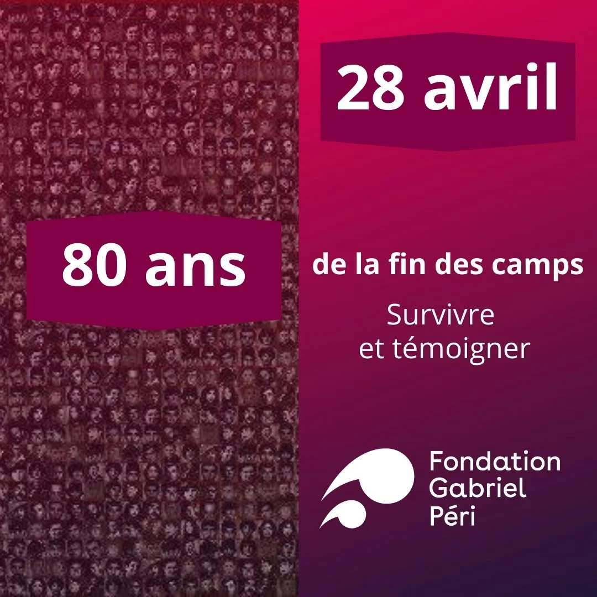
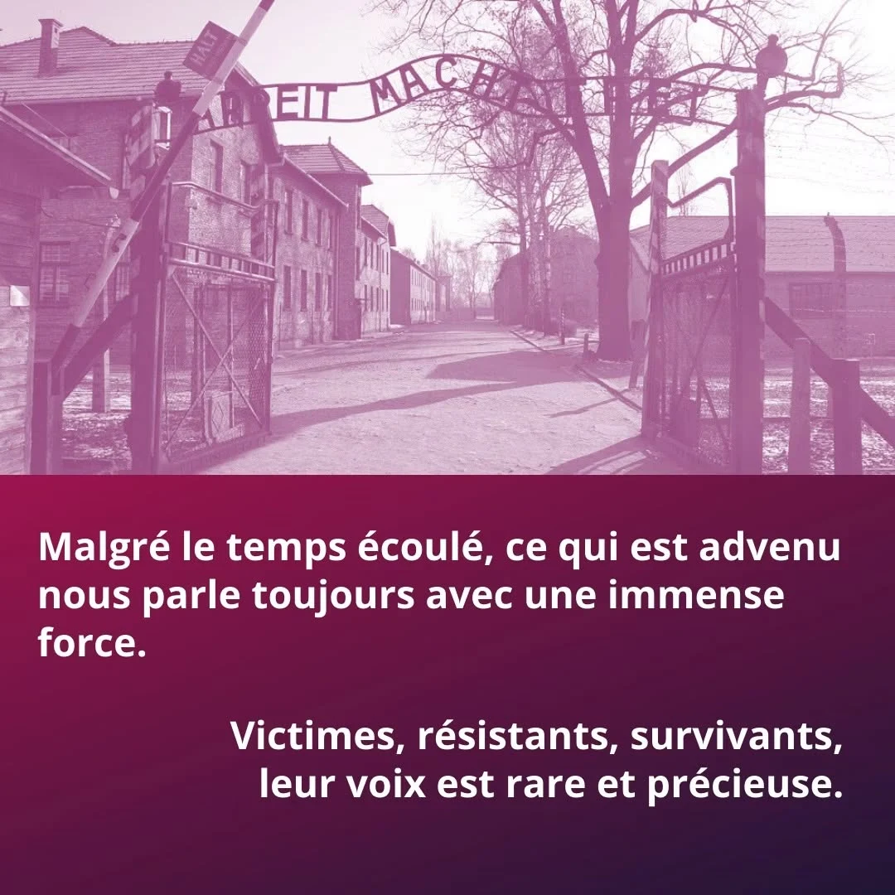
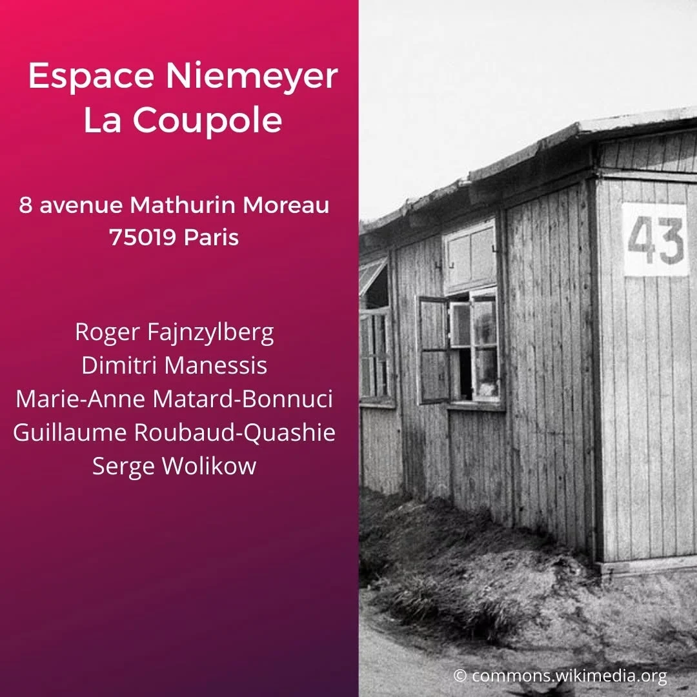
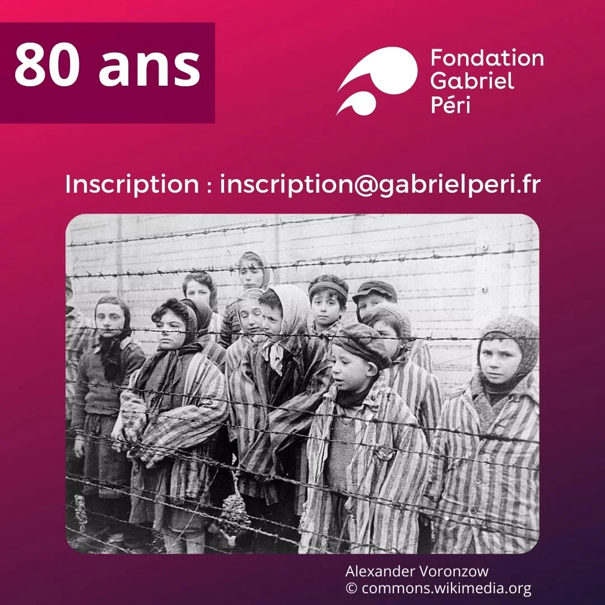
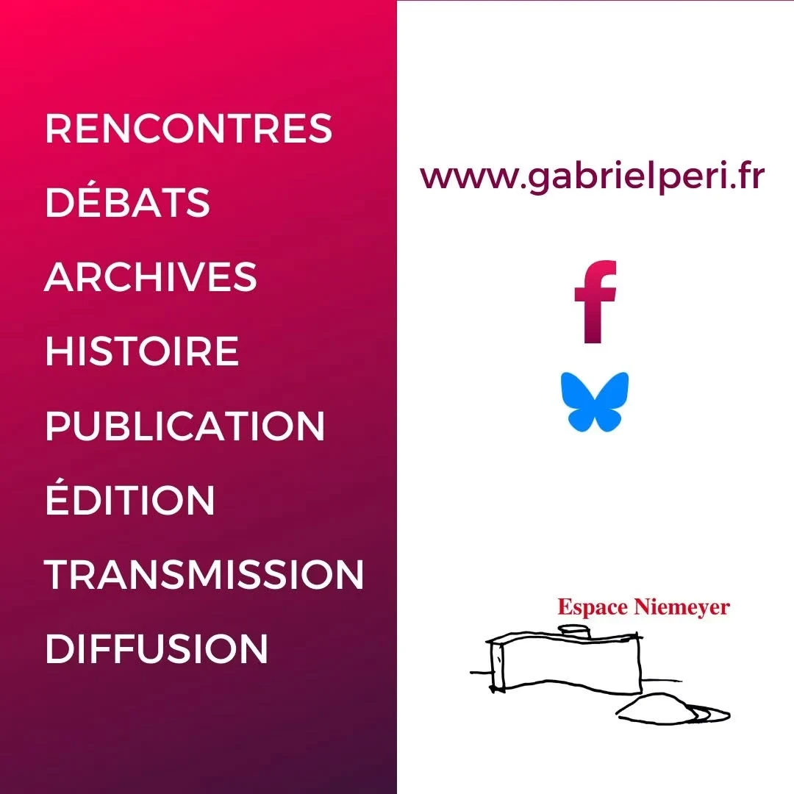

Annonce archivée
Fin des camps nazis. La Fondation Gabriel Péri annonce un hommage le 28 avril
Date de mise à jour indiquée par Facebook · 28 avril 2025
Repères éditoriaux
Nous avons relayé l’invitation de la Fondation Gabriel Péri pour le 80e anniversaire de la fin des camps nazis. Le rendez-vous du 28 avril était annoncé à l’espace Niemeyer, à Paris.
Texte de la publication · PCF national
La journée nationale du souvenir des victimes et des héros de la déportation, a pris une couleur singulière en ce 80e anniversaire de la fin des camps.
Un bel hommage sera rendu à ces hommes et à ces femmes au siège du PCF le lundi 28 à l'initiative de la Fondation Gabriel-Péri.
Pour ne jamais oublier.





Sources
PCF national · publication relayée par le PCF 79 · bibliothèque Facebook · AR-0002-FB-01136
À lire aussi · Auschwitz-Birkenau. Fabien Gay marque les 80 ans de la libération du camp